기다리고 기다렸던 부산여행!
다행히도 비는 오지 않았다.
고백을 하기로 결심을 했는데 부산으로 가는 내내 언제 말을 꺼낼지 어떻게 고백할지 생각했다.
그렇게 도착하고 산호옥에 앉아서 바다를 보며 조개구이를 먹었다.
술도 들어가고 바깥 풍경도 예쁘고 너도 예뻤다.
술과 분위기에 취해 취기를 빌려 고백을 했다.
너무 떨려서 생각처럼 멋있게 고백하지는 못했지만 받아줘서 기뻤다.
사랑해 다슬♥
5월2일 일요일 - 디에이블.해인카페.아트케이.개미집.칠곡회집
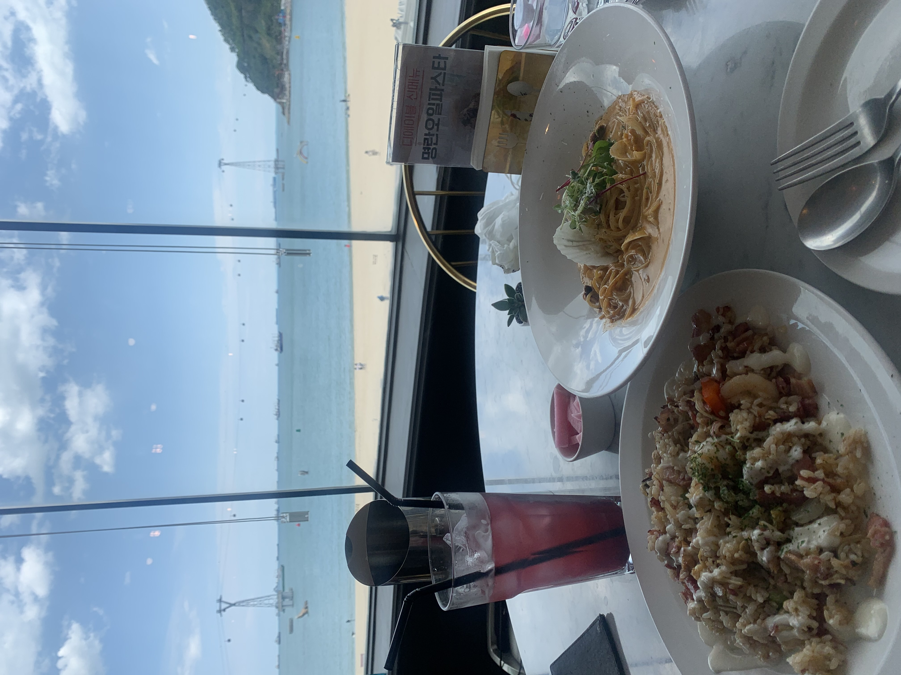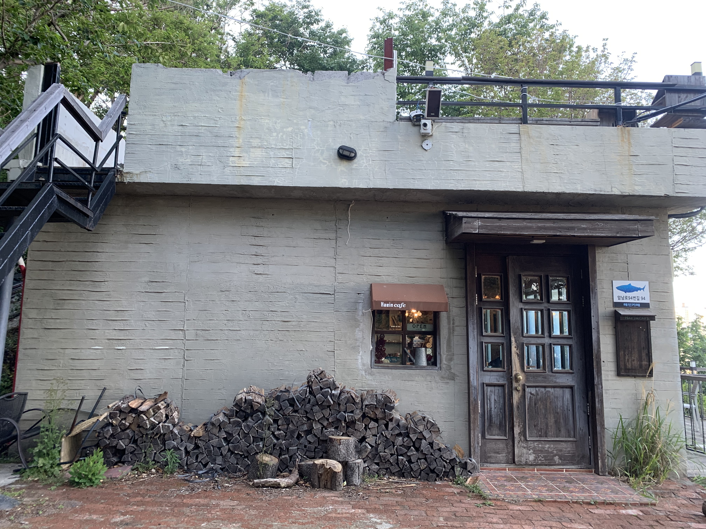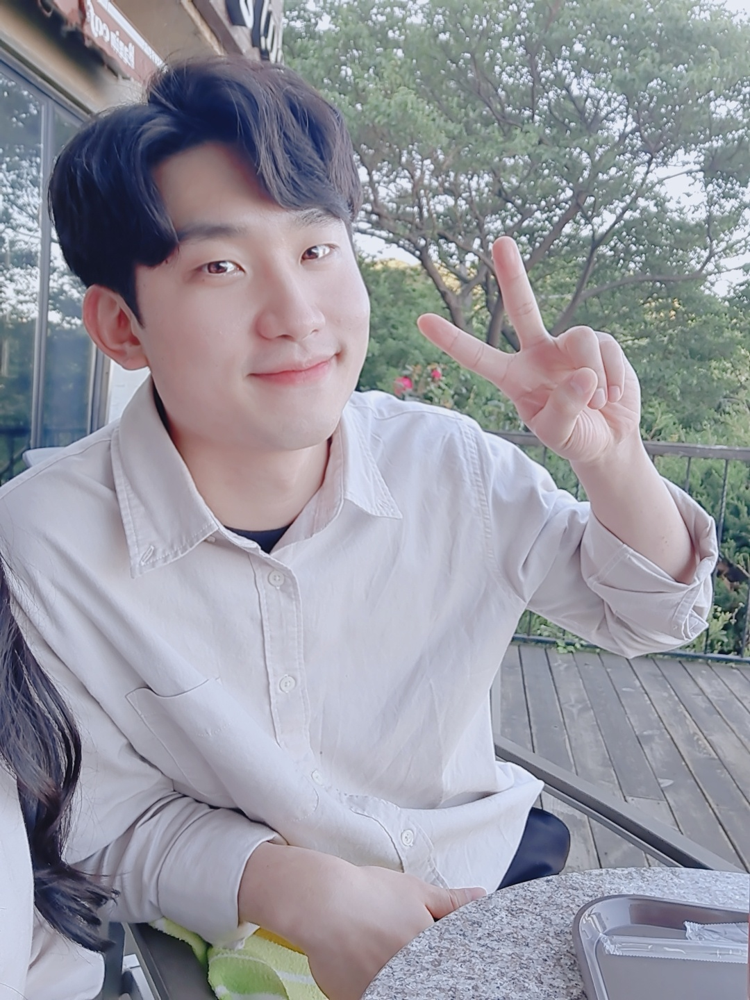
우리가 사랑한지 2일이 되는 날이다.
오늘부터는 데이트를 하는 것이라는 생각에 너무 좋았다.
뷰가 좋은 곳에서 맛있는 것도 먹고 커피도 마시면서 다슬이가 사진도 이쁘게 찍어줬다.
대구로 돌아가는데 여행이 아쉬워서 오늘 하루도 같이 보내고 같이 출근하기로 했다.
5월4일 화요일-청년다방.당신내곁에있어줄래요영화
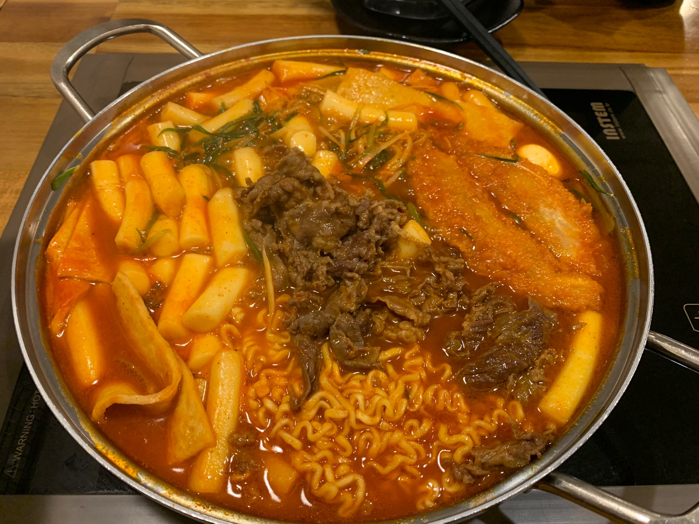
이 날은 비도 엄청 오고 다슬이의 눈도 많이 아팠다.
비도 그렇고 다슬이 눈도 아파서 딱히 할 수 있는게 많이 없어 청년다방에서 떡볶이 먹고
칠곡에서 방잡고 놀기로했다. 밖에 나가지 않아도 다슬이랑 같이 시간보내는게 너무 좋았다.
빨리 눈이 다 나았으면!
5월5일 수요일- 칠곡쭈꾸미.애견카페.동노.비움
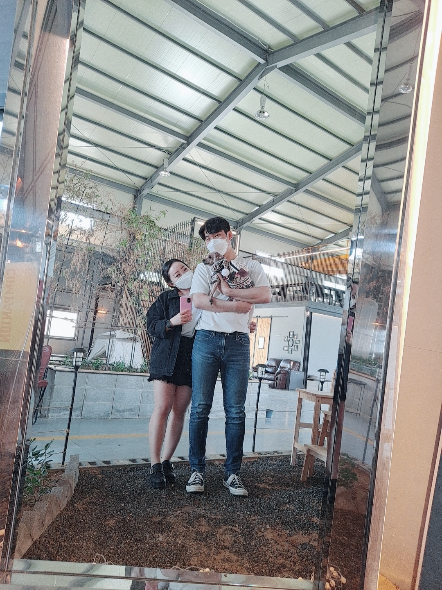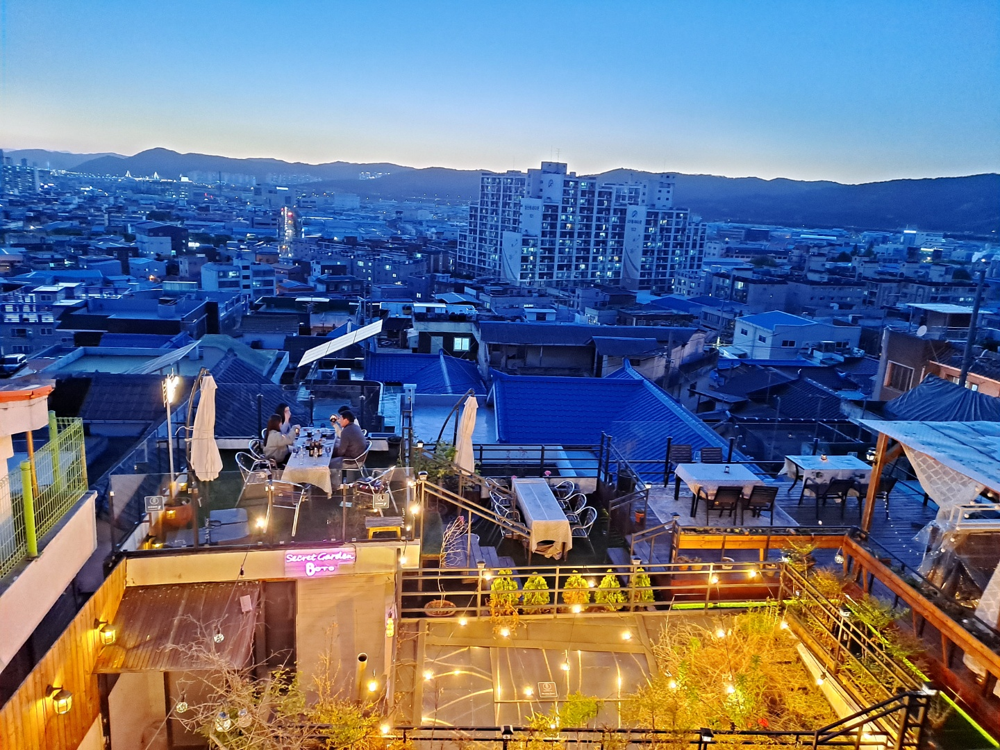
다슬이가 쫑이랑 처음 만난 날!
강아지를 무서워 하는 것 같은데 생각보다 쫑이랑 잘 논다 ㅎㅎ
애견카페에서 우연치않게 친구들을 만났다.
너무 당황한 탓에 뇌정지가 와서 친구들에게 제대로 다슬이를 소개 못했다.
돌아오는 길에 다슬이가 섭섭함을 느끼는 것 같아 너무 미안했고 차 안에서는 정적만이 흘렀다..
다음에 만나면 여자친구라고 꼭 소개할게!
5월7일 금요일-만촌오꾸닭
정말 오랜만에 오꾸닭을 갔다.
언제 먹어도 맛있었다.
다슬이랑 먹어서 그런지 더 맛있는 것 같다!
5월8일 토요일-수성못 남쑨이네
여기도 꼭 오고싶었는데 평소에 수성못에서 술 마실 일이 없어서 못왔었다.
다슬이랑 처음으로 남쑨이네를 갔는데 너무 분위기가 좋았다.
자리가 없어서 다른 곳에 가야할까봐 걱정했지만 다행히도 자리가 나서
맛있게 먹을 수 있었다!
5월9일 일요일-수성못미즈.우즈카페.안지랑곱창
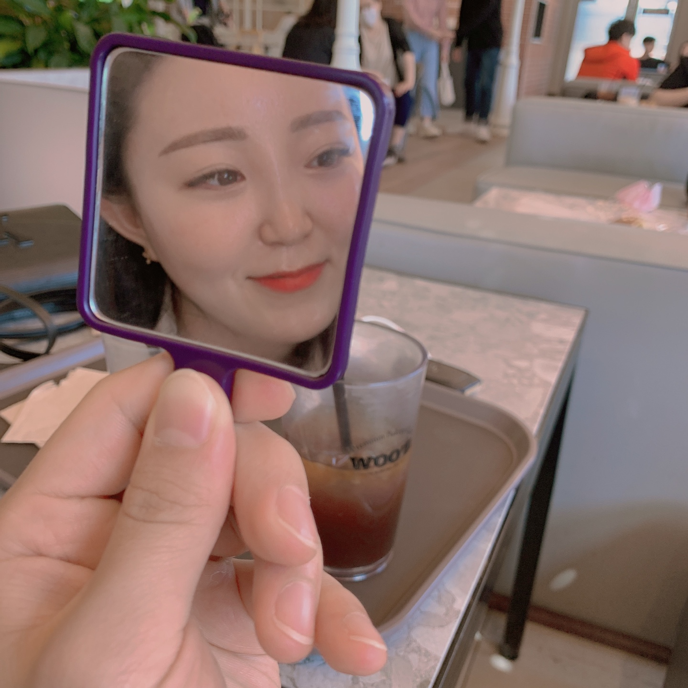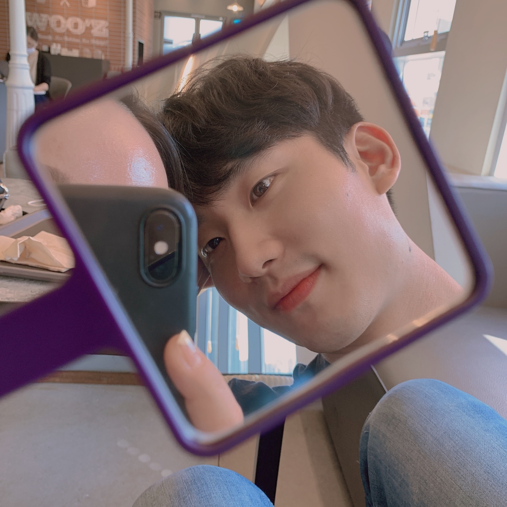
같이 자고 일어나서 미즈가서 밥먹고 우즈카페가서 커피도 마시고 사진 찍으면서 놀고 즐거웠다.
막상 나오니 할 게 없어서 너무 걱정이었다.
생각나는게 앞산 밖에 없어서 오늘도 안지랑가서 커피마시고 곱쏘했당 ㅎㅎ
오늘도 같이 자고 출근하기로 정했다!
같이 사는게 나을지도..ㅎㅎ
5월14일 금요일- 만촌오꾸닭.로즈데이꽃받음
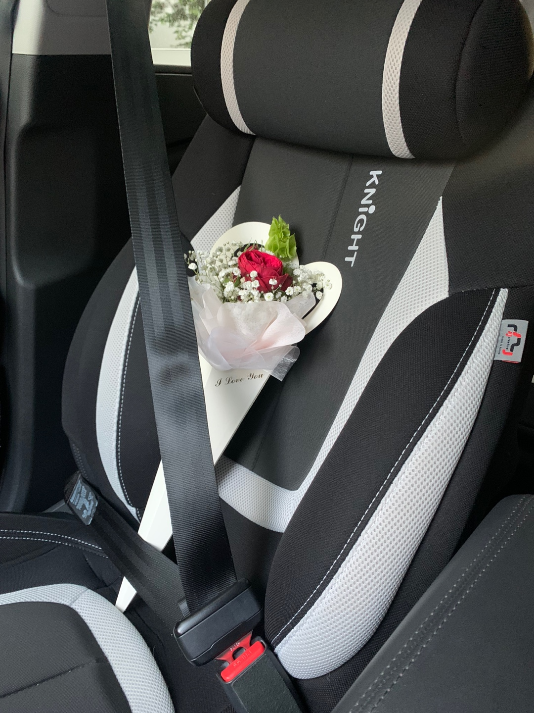
오늘은 로즈데이다.
꽃 한송이 선물하고 싶어서 하루종일 일하면서 꽃 집을 알아봤다.
마침 회사 근처에 꽃 집이 있어서 빨간 장미 한 송이를 샀다.
다른 색깔의 장미를 사고 싶었는데 품절이었다...ㅠㅠ
꽃이 소중해서 안전벨트를 메고 다슬이를 데리러 갔다.
문을 열면 놀라겠지? 라고 생각했는데 문을 열고 그냥 앉으려고 해서 놀랬다..ㅎ
웃겼지만 다슬이가 감동해주어서 기뻤다.
내년에도 꽃 선물해줄게! 내년에는 깔아뭉개지 말아죠 ㅎㅎ
5월15일 토요일-안경맞추기 슬로우라이프카페.몬스터캠핑
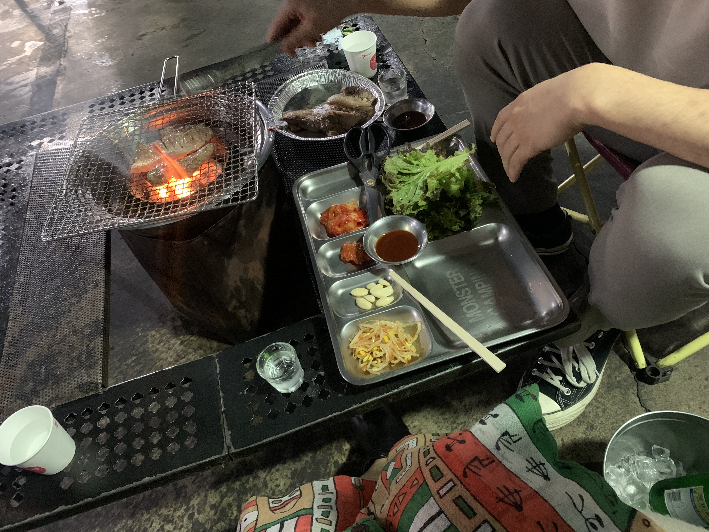
미루고 미루던 안경을 맞췄다.
테도 많고 뭐가 먼지 모르겠어서 불편했는데
다슬이가 잘 어울리는 안경테로 골라주었다.
그리고 카페를 갔다가 몬스터캠핑을 갔다!
세차장에서 캠핑 갬성이라니 너무 신선했다.(양념장 맛있었지 ㅎㅎ)
다음에 또 같이 가쟈 ㅎㅎ
5월16일 일요일-앞산팔덕식당.앞산카펠라카페.스파이럴영화
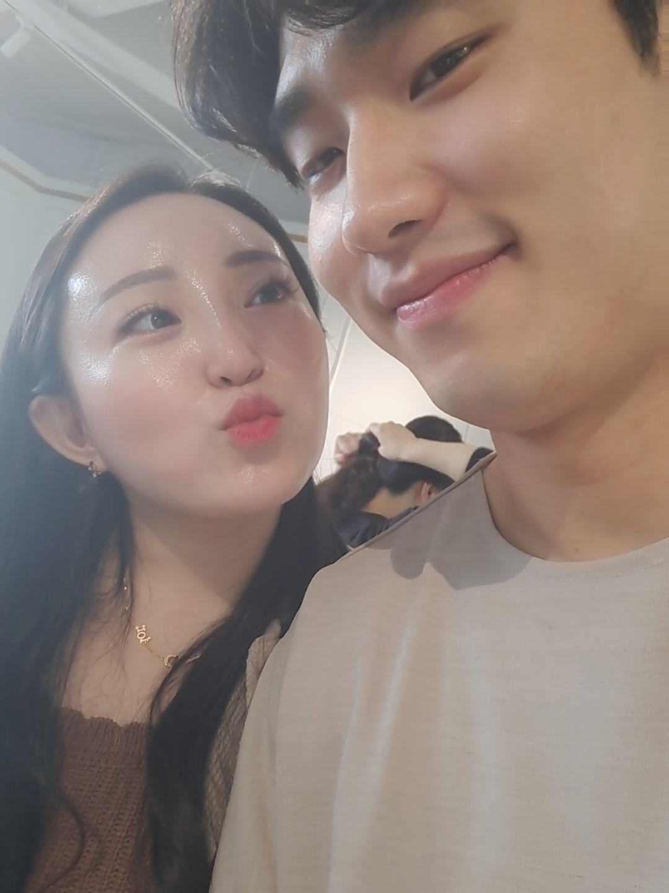
큰골집에 눈을 뜨게 된 날!
세상 존맛탱이었고 세상 친절한 큰골이들을 보았다.
카페갔는데 비가 너무 많이 와서 별로 예쁘지 않았고
뭐할지 고민하다가 결국 영화를 보았다.
아마 영화보면서 잘 잤던 날이 이 날이었던 것 같다 ㅎㅎ
5월18일 화요일- 칠곡 담다디 밥 겸 술
경주로 여행가기 전 날 다슬이랑 칠곡에서 저녁을 먹었다.
맛있었다. 사진도 없고 밥만 먹고 숙소로 들어갔다.
-끝- ㅋㅋㅋㅋ
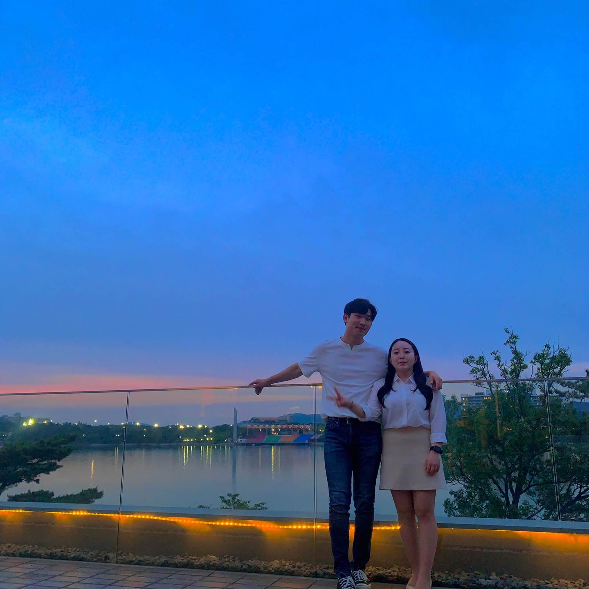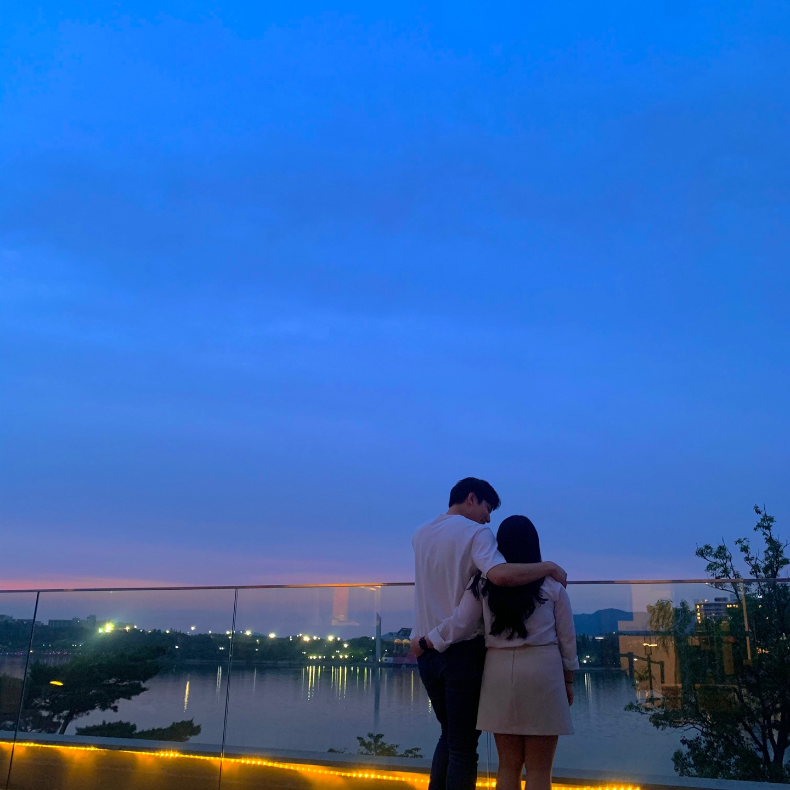
다슬이랑 두번째 여행이다.
날씨도 좋았고 너무 재미있었다.
대릉원에서 예쁘게 사진은 못 찍었지만 기억속으로 남겨두겠다 ㅎㅎ
아.. 황리단길 생각하니까 글 쓰다가 갑자기 개빡치네..ㅋㅋ (쫀드기랑 소바카게)
보문단지카페가서 아쉬우면서도 좋은 시간 보냈던 것 같다!
가장 기억에 남은건 같이 황리단길 걷고 보문단지카페에서 사진찍고 놀았던 것이다.
다음에 경주 또 놀러갑시당!
5월22일 토요일-밤에 데리러옴 (시내 골목대장)
이 날은 만나기로한 날은 아니었지만
다슬이가 늦은시간까지 쌤들이랑 술마시고 있다.
걱정되서 데려다주러 갔다!
술 냄새 날까봐 걱정하던 모습이 생각난다.
별로 안났는데 ㅎㅎ
5월23일일요일-집에서 놈. 도미노피자먹고 맥주
이 날 뭐하고 놀았는지 기억은 잘 안난다 ㅋㅋ
도미노피자 맛있었다!
5월29일토요일-앞산카페(댐퍼).홍림곱창
다시 한 번 앞산 again 데이트였다.
댐퍼가서 커피마시고 넷플릭스로 영화보는데 다슬이가 잠들었다.
일하고 와서 피곤했나보다..
앞산의 마지막은 역시 홍림곱창이다 :)
5월30일일요일-큰골집.앞산카페(민스크)
앞산의 아침은 역시 큰골집이다 ㅋㅋㅋㅋ
다슬이랑 같이 일하는 쌤도 마주쳤다.
그리고 큰골이 언니가 다슬이를 알아보고 쿨피스도 서비스로 줬다 ㅎㅎ
한 번 보면 잊기 힘든 사람인가보다.
다 먹고 민스크를 가서 커피를 마셨다.
자 그럼 여기서 문제!
커피를 마시고 우리는 어디로가서 뭘 했을까요? (hint:FT)